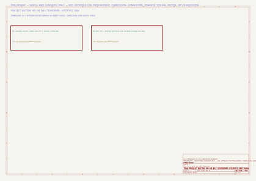
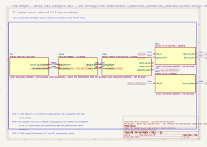
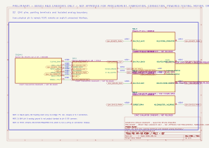

QB-001
PTCB E1 24DC/0.1A NO
Phoenix Contact · 1464484
Fixed 0.1 A electronic branch protection; remote contact DNP
EXACT EVALUATION CANDIDATE / NOT RELEASEDR184 · CONNECTED NATIVE KICAD CANDIDATE
Exact protection, terminals, ferrules, enclosure, panel, rail, glands and cable families now form one reviewable Q4X instrumentation branch. Fourteen evidence holds still prevent procurement, drilling, wiring and power.
PRELIMINARY - BENCH R&D CANDIDATE ONLY - NOT APPROVED FOR PROCUREMENT, FABRICATION, CONNECTION, POWERED TESTING, MOTION, OR ENERGIZATION
These are KiCad-generated SVG exports, not decorative redraws. ERC establishes modeled connectivity and annotation only.



QB-001
Phoenix Contact · 1464484
Fixed 0.1 A electronic branch protection; remote contact DNP
EXACT EVALUATION CANDIDATE / NOT RELEASEDQB-002
Phoenix Contact · 3209578
Four-connection Q4X 0 V terminal
EXACT EVALUATION CANDIDATE / NOT RELEASEDQB-003
Phoenix Contact · 3209510
Protected positive, remote park, analog pair and drain park
EXACT EVALUATION CANDIDATE / NOT RELEASEDQB-004
Phoenix Contact · 3030514 / 3030417
End covers; received fit/orientation required
EXACT EVALUATION CANDIDATES / NOT RELEASEDQB-005
Phoenix Contact · 3022218
DIN-rail end brackets
EXACT EVALUATION CANDIDATE / NOT RELEASEDQB-006
Phoenix Contact · 1207650
Cut, deburr, edge clearance and retention require inspection
EXACT EVALUATION CANDIDATE / CUT NOT RELEASEDQB-007
Phoenix Contact · 0828734 / 0828736
Human-readable terminal and breaker labels
EXACT FAMILY / PRINT QUANTITY NOT RELEASEDQB-008
Phoenix Contact · 3203066
22 AWG Banner cordset conductors
EXACT EVALUATION CANDIDATE / NOT RELEASEDQB-009
Phoenix Contact · 3201110
18 AWG source and internal conductors
EXACT EVALUATION CANDIDATE / NOT RELEASEDQB-010
Phoenix Contact · 1212034
0.25-6 mm2 ferrule crimp tool; received condition and trial crimps held
EXACT PROCESS-TOOL CANDIDATE / NOT RELEASEDQB-011
Hammond Manufacturing · PJ1084T
257 x 210 x 105 mm fiberglass twist-latch enclosure
EXACT EVALUATION CANDIDATE / NOT RELEASEDQB-012
Hammond Manufacturing · 14F0907
222.25 x 174.75 mm nonconductive panel
EXACT EVALUATION CANDIDATE / NOT RELEASEDQB-013
LAPP · 53111000
3.5-7 mm cable clamping range
EXACT EVALUATION CANDIDATE / NOT RELEASEDQB-014
LAPP · 53119000
Counter nuts for thin-wall through holes
EXACT EVALUATION CANDIDATE / NOT RELEASEDQB-015
Alpha Wire · 881802
Nominal OD 0.222 in; black/red conductors
EXACT CABLE DESIGNATION / PROCUREMENT FORM NOT RELEASEDQB-016
Banner Engineering · 815158
2 m, five 22 AWG conductors, M12 female; drain remains parked
R183 EXACT EVALUATION CANDIDATE / NOT RELEASEDQB-017
Banner Engineering · 97540
0-10 V analog laser displacement witness; zero safety credit
R183 EXACT EVALUATION CANDIDATE / NOT RELEASEDQB-018
Keithley / Tektronix · 2220-30-1
24.0 V candidate; current limit SELECTION REQUIRED
R183 EXACT EVALUATION CANDIDATE / NOT RELEASEDQB-019
SELECTION REQUIRED · SELECTION REQUIRED
Must mate TIVPMX10X without exposed conductive access
SELECTION REQUIRED / NO PHYSICAL CONNECTION RELEASEDExact PS-Q4X1 current-limit setting, lock method, startup/inrush behavior and current-limit transient accepted on received equipment
Received PTCB identity, orientation, terminal inspection, trip/overload/short behavior and no-backfeed fault campaign accepted
Exact Alpha Wire procurement form, installed length, routing, bend radius, stripping, ferrule count and received cable identity released
Dimensioned hole/rail layout, gland torque, wall thickness, spacing, label plan and completed-enclosure environmental rating reviewed
150.0 mm rail cut, deburr, edge clearance, end-bracket retention and isolated mounting on received 14F0907 panel inspected
Cordset drain verified and parked only at XQ1.6 with no bridge, PE, rail, chassis or 0 V connection; analog noise evidence accepted
No-PE-entry/no-bond fiberglass-box proposal accepted for Boston use; isolated DIN rail and all domain boundaries verified unpowered
Received terminal/ferrule/tool identities, strip lengths, crimp samples, insertion, retention and second-person wire trace accepted
Installed ambient, closed-box rise, device derating and abnormal-condition temperatures accepted
Exact guarded TIVPMX10X analog lead fixture selected; no exposed conductive access and no alternate ground path
Boston build/test site, jurisdiction, supply connection practice, guarding and qualified electrical review accepted
Controlled receiving, assembly, unpowered continuity/isolation and later powered-test authorizations issued separately
R183 received Q4X chain, target, support, configuration, calibration, uncertainty and no-motion threshold accepted
Qualified electrical and functional-safety reviewers accept the instrumentation boundary; zero safety credit retained
| ID | Maker | Document | Revision/date | Controlled use |
|---|---|---|---|---|
| QBS-001 | Phoenix Contact | PTCB E1 24DC/0.1A NO product page | live page; checked 2026-08-10 | Exact part, 10-30 V, fixed 0.1 A, 300 A short-circuit switching capacity, typical current limitation, shutdown behavior, terminals and dimensions |
| QBS-002 | Phoenix Contact | PT 2,5-QUATTRO product data | generated 2026-06-27; checked 2026-08-10 | Exact four-connection terminal and conductor range |
| QBS-003 | Phoenix Contact | AI 0,34-8 TQ product data | generated 2026-06-11; checked 2026-08-10 | Exact 22 AWG ferrule, 8 mm contact range and 10 mm strip |
| QBS-004 | Phoenix Contact | AI 0,75-8 WH product page | live page; checked 2026-08-10 | Exact 18 AWG ferrule, 8 mm contact range and 11 mm strip |
| QBS-005 | Phoenix Contact | CRIMPFOX 6 product page | live page; checked 2026-08-10 | Exact ferrule tool and 0.25-6 mm2 range |
| QBS-006 | Hammond Manufacturing | PJ1084T product page | live page; checked 2026-08-10 | Exact fiberglass enclosure and external dimensions |
| QBS-007 | Hammond Manufacturing | PJ-series enclosure page | live page; checked 2026-08-10 | Component enclosure construction and ratings; no completed-box rating inferred |
| QBS-008 | Hammond Manufacturing | 14-series inner-panel page | live page; checked 2026-08-10 | Exact 14F0907 fiberglass inner panel and dimensions |
| QBS-009 | LAPP | SKINTOP ST-M 12x1.5 product page/data | data sheet valid 2025-01-24; checked 2026-08-10 | Exact gland, M12x1.5, 3.5-7 mm range and component ratings |
| QBS-010 | LAPP | SKINTOP GMP-GL-M 12x1.5 product page | live page; checked 2026-08-10 | Exact thin-wall lock nut |
| QBS-011 | Alpha Wire | 881802 product page | live page; checked 2026-08-10 | 2C 18 AWG unshielded cable, black/red conductors, nominal/max OD and temperature/rating data |
| QBS-012 | Banner Engineering | BC-M12F5-22-2-SF product page | live page; checked 2026-08-10 | Exact 2 m cordset identity, 22 AWG conductors, 5.59 mm OD and floating drain wording |
| QBS-013 | Banner Engineering | Q4X analog sensor manual | 185624 Rev J; 2026-03-27 | Exact pins, 12-30 V supply, less-than-675 mW consumption excluding load, 0-10 V output and 10 minute warm-up |
| QBS-014 | Keithley / Tektronix | Series 2200 specifications | 2220S-905-01 Rev B; 2013-12 | 2220-30-1 isolated 0-30 V / 0-1.5 A channel capability; received instrument remains required |
None. EG-025 stays open; EG-026 stays partial. There are zero released connections, zero authorized purchases, zero authorized fabrication steps, zero powered runs and zero safety-function credit.